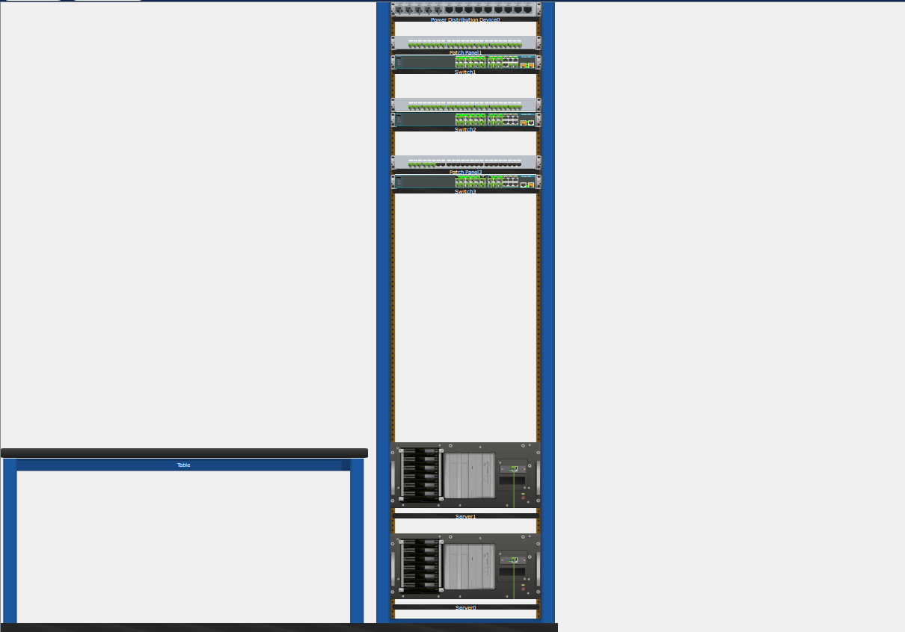
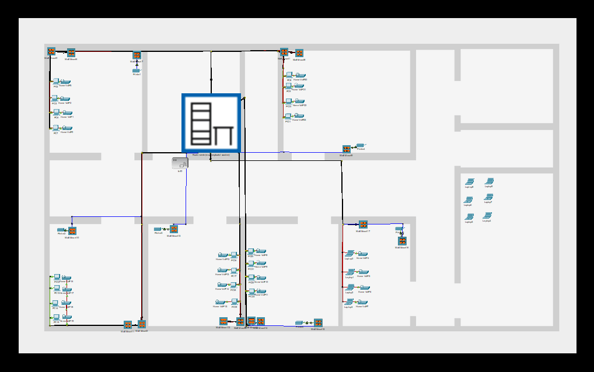

Fysieke Opbouw en Gestructureerde Bekabeling
Het project begon met het plannen van de fysieke opbouw van het netwerk. Allereerst bepaalde ik welke apparaten nodig waren, zoals switches, routers, servers en patchpanelen. Vervolgens bedacht ik een logische volgorde voor de installatie van de apparatuur. Het patchpaneel werd bovenaan geplaatst om overzicht te behouden over alle UTP-kabels. Daaronder werden de switches geïnstalleerd, zodat korte en nette patchkabels konden worden gebruikt. De servers en zware apparaten kwamen onderaan om stabiliteit en optimale koeling te garanderen.
Elke kabel werd zorgvuldig gelabeld om fouten te voorkomen en onderhoud te vergemakkelijken. Kleurcodes werden gebruikt om verschillende netwerksegmenten snel te kunnen onderscheiden. Ik hield rekening met airflow om oververhitting van de apparatuur te voorkomen. Tijdens het installeren controleerde ik voortdurend of alles stevig en veilig gemonteerd was. Ik maakte een schets van het rack om de indeling te documenteren. Het doel was om een overzichtelijk, professioneel en gemakkelijk uitbreidbaar netwerk te creëren.
Alle kabels werden netjes gebundeld met kabelbinders en georganiseerd langs de rackzijden. De fysieke opbouw werd gecontroleerd op toegankelijkheid voor toekomstig onderhoud. Ik testte elke verbinding nadat de apparaten geïnstalleerd waren. Het resultaat was een overzichtelijk rack waarin elke component direct te identificeren was. Dit zorgde ervoor dat het netwerk betrouwbaar en schaalbaar was. Het eerste deel van het project draaide volledig om orde, structuur en overzicht, waardoor mogelijke problemen later sneller konden worden opgespoord.

Netwerkconfiguratie, Beveiliging en Grondige Testfase van het Rack
Het tweede deel van het project concentreerde zich op het opbouwen van een compleet server-rack. Eerst werden alle benodigde apparaten geselecteerd: servers, switches, patchpanelen, firewall en UPS. Het rack werd zorgvuldig ingericht met de zware apparaten onderaan voor stabiliteit en optimale koeling. Het patchpaneel werd bovenaan geplaatst om alle UTP-kabels overzichtelijk te kunnen aansluiten. De switches werden in het midden geïnstalleerd, zodat korte en nette kabelverbindingen mogelijk waren. Tijdens het plaatsen werd er constant gelet op airflow en toegankelijkheid voor toekomstig onderhoud.
Daarna begon de fysieke bekabeling van het rack. Alle kabels werden gelabeld en kleurgecodeerd om fouten te voorkomen en onderhoud te vergemakkelijken. Kabelbinders en managementrails werden gebruikt om een strak en overzichtelijk netwerk te creëren. Elk apparaat werd getest nadat het aangesloten was om te controleren of de verbindingen correct waren. De installatie werd gedocumenteerd met een schema van het rack, zodat duidelijk was waar elk apparaat stond en hoe de kabels liepen. Deze structuur zorgde ervoor dat het netwerk later eenvoudig kon worden uitgebreid of aangepast.
Tot slot werd het rack geconfigureerd en getest. De servers kregen de juiste IP-adressen en werden aangesloten op de switches. VLAN’s werden ingesteld om netwerksegmenten te scheiden, terwijl de firewall regels kreeg voor beveiliging en gecontroleerd extern verkeer. DHCP en routing werden geconfigureerd om netwerkverkeer efficiënt te laten verlopen. Daarna werden tests uitgevoerd om de stabiliteit en werking van alle apparaten te controleren, inclusief de UPS bij spanningsuitval. Het resultaat was een professioneel, overzichtelijk en functioneel server-rack dat zowel fysiek als logisch correct was opgebouwd en volledig klaar voor gebruik.